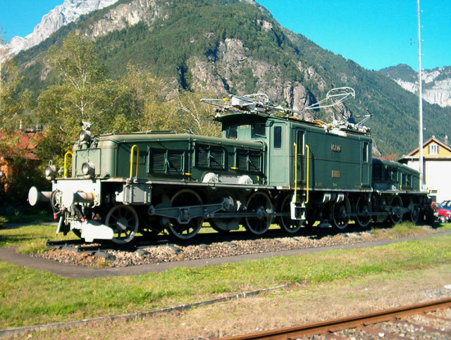

coccodrillo

Coccodrillo è il soprannome attribuito a una categoria di locomotive elettriche, prodotte da varie fabbriche e in varie versioni, caratterizzate da una forma particolare, con lunghi avancorpi alle due estremità, connessi e articolati ad un corpo centrale, che ricordano il muso di un coccodrillo. Tale nome venne usato per la prima volta ad indicare le locomotive svizzere e in seguito si diffuse ad indicarne le similari. Le prime locomotive che ricevettero il soprannome di "Coccodrillo" furono le Ce 6/8II e Ce 6/8III delle Ferrovie Federali Svizzere, progettate per la ferrovia del Gottardo. Il soprannome venne quindi esteso anche alle De 6/6, utilizzate sulla Seetalbahn, alle Ge 6/6I della Ferrovia Retica, alla Ge 4/4 della Ferrovia del Bernina e alle HGe 4/4I della Ferrovia Briga-Visp-Zermatt. In Austria, il soprannome Krokodil si diffuse per indicare le locomotive 1100 delle ÖBB; in Germania, indicò le E 93 ed E 94 della Deutsche Reichsbahn, ma anche le E 71.1. In India locomotive simili alle Ge 6/6I localmente classificate come WCG-1 ma più grandi, per lo scartamento largo di 1676 mm (5'6") e per la tensione di 1 500 Volt, a corrente continua, e rodiggio C-C furono costruite nel 1928 da SLM, Vulcan Foundy e Metrovick per le lunghe rampe dalla città di Mumbay verso la scarpata dei Ghat; anch'esse erano note come Crocodiles in inglese.